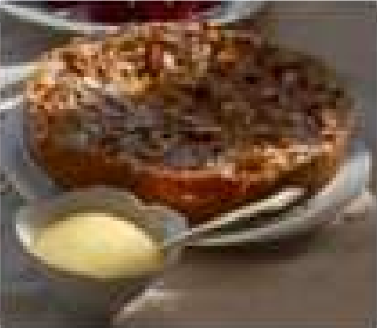

A classic European torte baked in a springform pan. Cream cheese, sliced almonds, and apples make this the perfect holiday treat (12 servings).
★ ★ ★ ★
4 stars! I loved the buttery taste of the crust which complements the apples very nicely. — Reviewed on Sep. 22, 2010 by MMASON.
★ ★ ★
Nothing special. I like the crust, but there was a little too much of it for my taste, and I liked the filling but there was too little of it. I thought the crunchy apples combined with the sliced almonds detracted from the overall flavor. — Reviewed on Sep. 1, 2010 by GLENDACHEF.
★ ★ ★ ★ ★
Delicious! I recommend microwaving the apples for 3 minutes before baking to soften them. Great dessert – I’ll be making it again for the holidays. — Reviewed on Aug. 28, 2010 by BBABS.